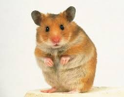
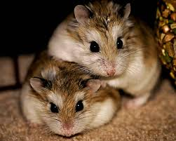

Choosing the right hamster depends on how much space you have and how much interaction you want. Use this visual guide to identify your favorite small friend!
Breed Identification Table
Breed NamePhotoKey Visual FeatureHand-Size
Syrian (Golden)

Large size, many coat colors (inc. Long-hair)Hand-filling
Roborovski

White "eyebrows" and sandy-gold coatSmaller than a golf ball
If you see a hamster that looks like a tiny mouse with a short, stubby tail—it's likely a **Chinese Hamster**. If it looks like a round ball of fluff with no visible tail—you're looking at a **Dwarf species**.
The PurrPets Pro Tip: Syrian hamsters are the only ones that come in the "Long-Hair" or "Angora" variety. If you see a hamster with a skirt of long fur, it's definitely a male Syrian!